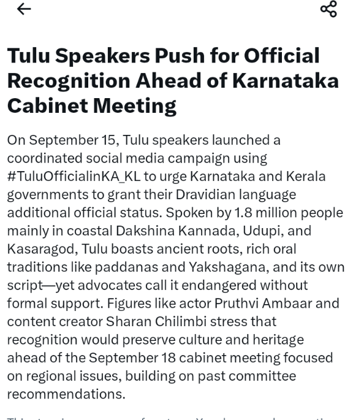
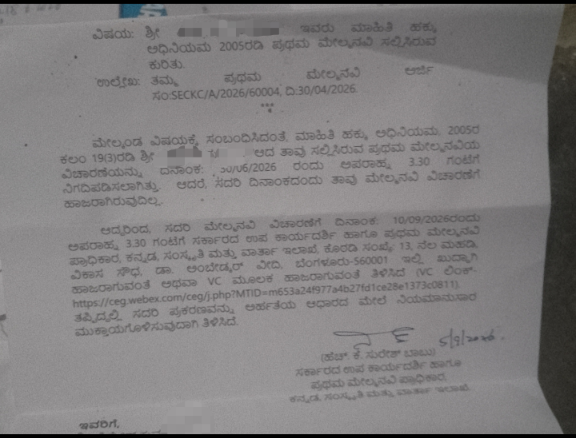

MANGALURU — On September 15 2026, a massive public mobilization took over social media platforms across coastal Karnataka and Kerala under the hashtag #TuluOfficialinKA_KL. Driven by cultural organizations including Jai Tulunadu, the campaign demands formal additional official language status for Tulu in Karnataka and Kerala, coming exactly three days before the Karnataka State Cabinet convenes in Mangaluru on September 18.
The campaign has gained widespread momentum, drawing support from regional cultural figures, including actor Pruthvi Ambaar and prominent content creator Sharan Chilimbi. Both stressed that formal official recognition is essential to safeguard the language, its distinct oral traditions like Paddanas and Yakshagana, and its historical script, which advocates warn remain vulnerable without statutory backing.
Spoken by over 1.8 million people across Dakshina Kannada, Udupi, and Kasaragod, Tulu possesses a rich linguistic heritage and ancient roots. The current drive seeks to build upon the momentum of the 2021 digital campaign, which generated over 450,000 posts, by establishing an even larger public statement ahead of the Cabinet meeting.
Political focus on the issue has intensified alongside the campaign. Recently, a Dakshina Kannada BJP delegation formally submitted a 44-point memorandum to Chief Minister D.K. Shivakumar ahead of the Mangaluru session, explicitly including the recognition of Tulu as an additional official language of Karnataka among its primary demands.
While digital mobilization and political memoranda effectively demonstrate widespread public demand, Taulava Gēl Inaya Koolya (TGIK) emphasizes that a hashtag campaign is only one part of the officialization process. The decisive phase remains formal government action and legal implementation.
Through rigorous Right to Information (RTI) monitoring, TGIK has tracked the precise administrative timeline surrounding the officialization of Tulu:

As expectations build around the upcoming September 18 Cabinet meeting in Mangaluru, TGIK maintains that public mobilization must be matched by concrete administrative accountability. TGIK places four essential questions before the State Government:
The #TuluOfficialinKA_KL campaign successfully highlights the deep public commitment to Tulu language rights. However, TGIK cautions against declaring victory based on social media trends or political promises alone.
If a positive decision is taken on September 18, public focus must immediately pivot to implementation details—including administrative usage, educational integration, competitive examination access, departmental notifications, and geographic scope. If deferred or omitted, the administrative paper trail will become even more vital to ensure accountability.
"Public campaigns demonstrate demand. Political memoranda communicate issues. But official language status requires a recorded Cabinet decision, statutory notification, and enforceable implementation under the law." — Taulava Gēl Inaya Koolya (TGIK)